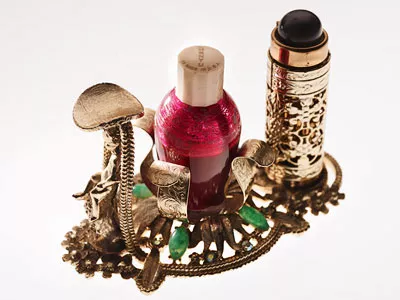

| Peggy Olsen's Email |
|
''I'll take any old mail you'll wanna give me,'' says Wells.
''I'm desperate for it. Any old mail with old stamps on it
is like, ooh la la. We want that bad.'' |
Season 3 Episode 2 |
| The Draper's TV Remote |
|
Amy Wells was thrilled to spot this old Zenith TV remote in a Seattle store.
''They are so hard to find,'' she says. Although Harry is the head of the TV department,
''really, the remote is for anybody to use. It's one of the only ones I've got.' |
Season 3 Episode 2 |
| Betty Draper's Lipstick |
|
''Especially if a woman was going out, a lot of lipstick holders had
jewels on them,'' says Perello of this holder she picked up at an antique
shop. ''You wish they weren't meant for one-time use, but a lot of them were.'' |
Season 1 Episode 2 |
| The Draper's Coupons |
|
All the coupons in the Draper home come directly from period magazines like Life,
Good Housekeeping, TV Guide — ''whatever we can get our hands on,'' says Wells.
''Ah, Bosco. Do you remember Bosco? It was the alternative to Hershey's syrup.'' |
Medium |
| Betty Draper's Nailpolish Stand |
 |
Perello found this stand as part of a set that also came with, no joke,
a special hairspray holder. ''I love, love, love that set,'' she laughs.
''It just seems like so elaboration just to hold your hairspray. It's dressed on
Betty's vanity. We wouldn't give that just to anybody.'' |
Season 2 |
| Hershey's Campaign Packet |
|
Want some insight into the Hershey empire?
Don Draper, the resident creative genius at Sterling Cooper & Partners suffered a genuine crisis at the most unlikely time
-- during a business meeting.
At first, Don dazzles visiting Hershey executives with a heartwarming pitch that
linked his own loving childhood to a Hershey’s chocolate bar.
Of course, it’s a lie -- and the home audience immediately knows it.
Then, Don makes sure the Hershey executives know it.
This design prop sold for $1,400 at auction.
|
Season 6 Episode 13
In Care Of.
|
| Draper Breakfast Table |
|
''We probably have 20 cottage cheese containers,'' laughs Perello. ''I come across cottage cheese containers like you wouldn't believe.'' Thankfully, they're empty of any vintage cheese. |
Season 1 Episode 4 |
| Nailpolish Remover |
|
''When I was researching, I kept seeing the same nail-polish remover over and over
with that distinct top and squatty bottle,'' says Perello.
''To find, in mint condition, three bottles — it was a joyous day.'' |
Season 1 Episode 2 |
| Sterling Cooper Office Supplies |
|
''We get as much [vintage] office stuff as we possibly can get our
hands on,'' says Wells, ''because of the amount of desks that we
have to dress. Those erasers are what we call dead stock.
They're real vintage, but they've never been used.'' |
Season 3 Episode 4 |
| Don Draper's Typewriter |
|
In the first half of season seven, you could spot this (working) Smith-Corona Coronet Automatic 12 electric typewriter at the home office of Don Draper.
Sold at auction for $9,000. |
Season 7 |